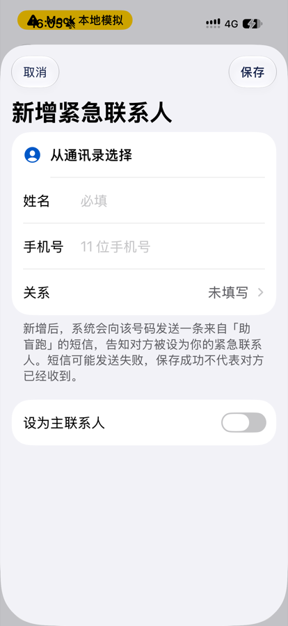

盲人端 · 少填表（#807）· 稿 v1（待负责人确认）
只改两件事：
添加紧急联系人
少填 —— 新增时不再选「关系」、不再拨「设为主联系人」，两项都在编辑页改；
添加常用地点
不再进整张约跑表单，改成一页「搜索 → 点一下就收藏」。 个人资料页由 PR #784 处理，本稿不画。页面底色、卡片、圆角沿用 11-05 定稿的二级页；按钮用 #749 的实心胶囊；右上角「保存」挪到底部（工具栏文字按钮过不了无障碍审计，也够不到 64pt）。
① 从通讯录添加紧急联系人
改前
选完人后的表单

选完人还要看 6 个控件：换人、姓名、手机号、关系、主联系人开关、右上角「保存」。
6 个控件
→
选人后只剩
一次确认
改后
第一位联系人
9:41
5G ▮
添加紧急联系人
张
张三
手机号尾号 9001
张三会是你的主联系人
紧急情况下优先联系这一位。
新增后，系统会向该号码发送一条来自「助盲跑」的短信，告知对方被设为你的紧急联系人。短信可能发送失败，保存成功不代表对方已经收到。
添加
换一位联系人
进页念一句：「添加张三，尾号 9001。张三会是你的主联系人。」+ 短信告知。
双击「添加」就存好
，回列表念「已添加紧急联系人张三」。返回 = 不添加。
1 个按钮 + 换人
改后
已有联系人时
9:41
5G ▮
添加紧急联系人
李
李四
手机号尾号 7000
新增后，系统会向该号码发送一条来自「助盲跑」的短信，告知对方被设为你的紧急联系人。短信可能发送失败，保存成功不代表对方已经收到。
添加
换一位联系人
不写「主联系人」那张卡。要设为主联系人，添加后点那一行进编辑页（原有二次确认不变）。
通讯录里的号码不是 11 位手机号时，
不进这一页
，直接进下面的手动页，号码已填好、念出原因。
② 手动输入 · 编辑
改后
手动输入
9:41
5G ▮
手动输入
姓名
必填
手机号
11 位手机号
新增后，系统会向该号码发送一条来自「助盲跑」的短信，告知对方被设为你的紧急联系人。短信可能发送失败，保存成功不代表对方已经收到。
添加
只剩姓名、手机号两格（后端必填）。没填全按「添加」：念出缺哪一项，焦点跳过去，按钮不置灰。
改前 4 格
→
2 格
改后
编辑（点列表里的人）
9:41
5G ▮
编辑紧急联系人
姓名
李四
手机号
13700137000
关系
朋友
修改手机号不会给新号码发送告知短信。如果需要对方收到告知，请删除后重新添加。
设为主联系人
删除联系人
保存
内容和现在一样，「关系」在这里补。只把右上角「取消 / 保存」换成：返回 = 不保存，底部「保存」。
不变
列表页
列表页、关系选择页保持 11-05 定稿（#747）的样子，不改。
只改「从通讯录添加」之后去哪：选完人进上面的确认页，不再进表单。
添加、编辑都从「弹出层」改成「推进一页」，左上角返回就是取消 —— 少一个「取消」按钮要找。
③ 添加常用地点
改前
首页 › 默认出发地点 › 添加常用地点
点了以后进的是
整张约跑表单
（和「预约陪跑」同一页），念「请搜索出发地点，然后收藏它」。
页面上有：
当前定位卡 / 定位授权提示
地图
「收藏这个地点」按钮
常用地点列表
搜索框 + 搜索按钮
下面还有时间、时长、配速等约跑步骤
要搜 → 选 → 再找到「收藏」→ 再自己返回首页。
进了另一个流程
→
一页
搜到就收藏
改后
刚进来
9:41
5G ▮
添加常用地点
例如：科技园地铁站 A 口
进页念「说出或输入地点名称」。一个搜索框，右边是苹果语音（和约跑页同一个控件
VoiceTextField
），说完自动搜。
改后
搜到结果
9:41
5G ▮
添加常用地点
科技园地铁站
找到 3 个地点，点一个就收藏
科技园地铁站 A 口
南山区深南大道
科技园地铁站 D 口
南山区科技南十路
科技园（地铁站）公交站
南山区深南大道辅路
念「找到 3 个地点，第一个是科技园地铁站 A 口」。
点一行 = 收藏并设为默认出发地点
，回首页念「已收藏科技园地铁站 A 口，之后默认从这里出发」。
搜索 + 点一下